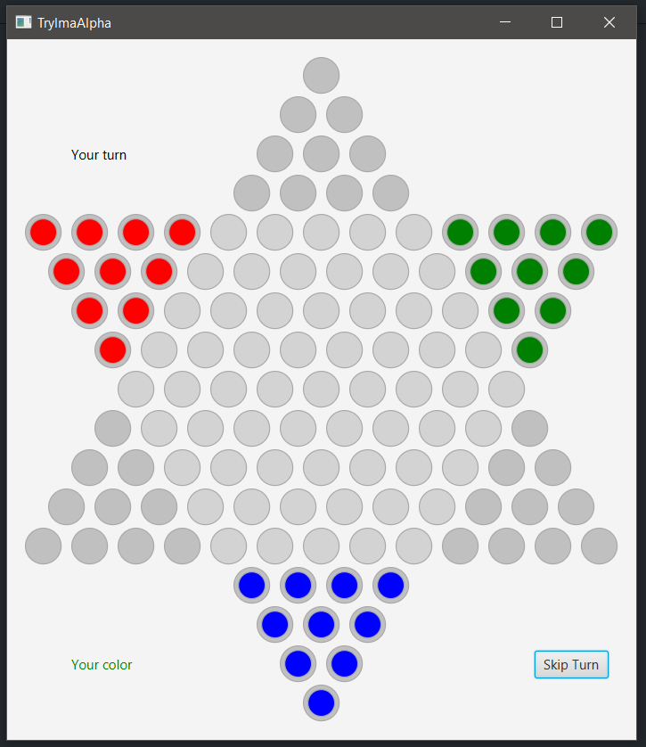
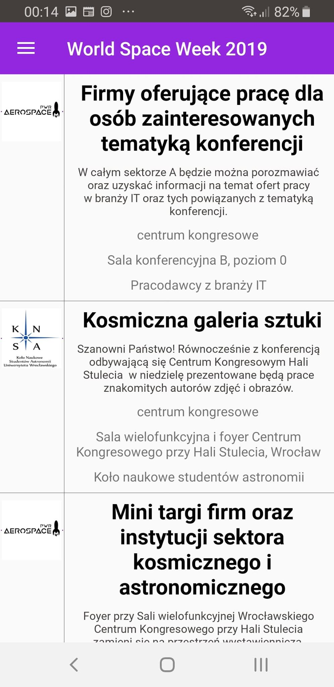
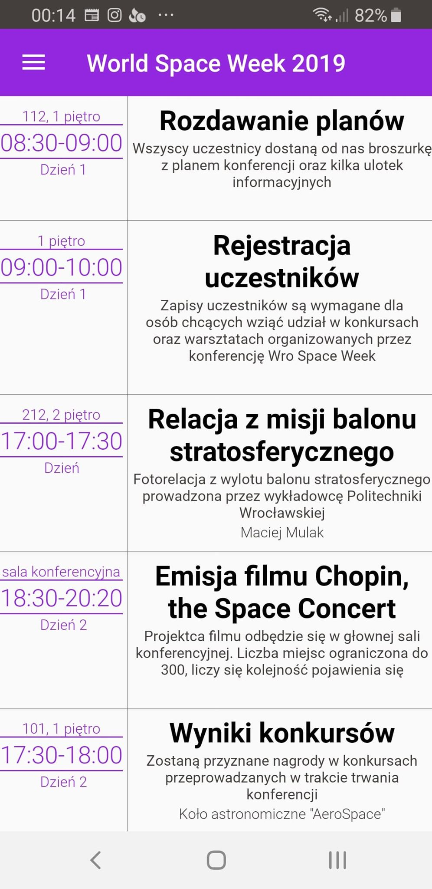

The objective is to be first to race all of one's pieces across the hexagram-shaped board into "home"—the corner of the star opposite one's starting corner—using single-step moves or moves that jump over other pieces (wiki source). Made in client-server architecture in Java (SDK 8) using javaFX.
 
II. WroSpaceWeek App
App created for astronomical conference that took place in october 2019 in Wrocław. It was also assigment for our course mobile apps. Our team consisted of 5 people. We used firebase as a database.

III. Computer Architecture
This consists of many smaller task made for computer architecture course. Example tasks:
Assignment 2 [Bash]:
- Drawing chart of internet usage, computer's up time, battery level, system load.
- Current processes list with number of opened file descriptors.
- Downloading random cat photo and using img2txt create ASCII art in terminal.
- Checking for changes on a website.